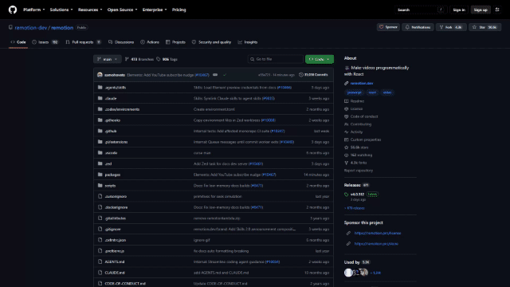
暂未生成真实 GIF请先运行 npm run capture:github
camera-zoomcamera
镜头平滑到标题并放大
镜头平滑移动到仓库 title，然后以 title 为中心放大 3 倍
真实 GitHub 指令：使用真实 GitHub 录制，先将镜头平滑移动并锁定在仓库 title，再以 title 为中心连续放大到 3 倍；保持真实页面纹理清晰。
素材要求：captured-page
默认参数
{
"scaleFrom": 1,
"scaleTo": 3,
"origin": "repository-title",
"focusDurationMs": 2500,
"zoomDurationMs": 2500,
"easing": "easeInOut"
}
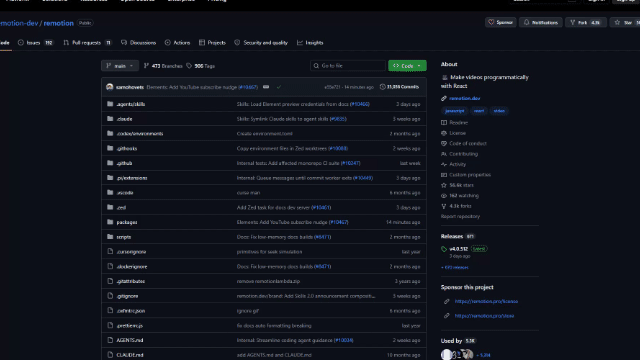
暂未生成真实 GIF请先运行 npm run capture:github
camera-pancamera
镜头平滑平移
镜头从页面左上角平滑移动到右下角
真实 GitHub 指令：使用真实 GitHub 录制，从仓库标题区域平滑横向/纵向移动到文件列表区域。
素材要求：captured-page
默认参数
{
"from": {
"x": 0,
"y": 0
},
"to": {
"x": 160,
"y": 72
},
"easing": "easeInOut"
}
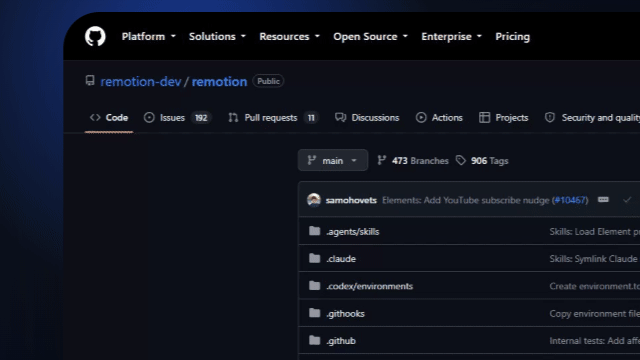
暂未生成真实 GIF请先运行 npm run capture:github
perspective-tiltcamera
透视倾斜运镜
将 GitHub 网页录屏当成一张平面，进行 X/Y 轴旋转、透视变形和缓慢运镜
真实 GitHub 指令：使用真实 GitHub 录制，把网页视频当成一张平面，同时进行 X/Y 轴缓慢旋转、透视变形和轻微横纵运镜；保持网页内容清晰，不重绘网页。
素材要求：captured-page
默认参数
{
"perspectivePx": 1100,
"rotateXFrom": 8,
"rotateXTo": -4,
"rotateYFrom": -15,
"rotateYTo": 12,
"translateFrom": {
"x": -18,
"y": 10
},
"translateTo": {
"x": 16,
"y": -8
},
"scaleFrom": 0.96,
"scaleTo": 1.03,
"easing": "easeInOut"
}
暂未生成真实 GIF请先运行 npm run capture:github
punch-incamera
强调式快速推进
在按钮出现时快速推进 115%，随后回弹到 105%
真实 GitHub 指令：使用真实 GitHub 录制，在 README 目标标题进入画面时快速推进到 115%，再回弹到 105%。
素材要求：captured-page
默认参数
{
"peakScale": 1.15,
"settleScale": 1.05,
"durationMs": 420,
"easing": "backOut"
}
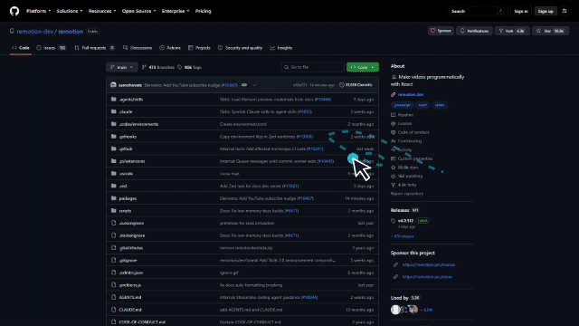
暂未生成真实 GIF请先运行 npm run capture:github
cursor-smoothpointer
光标平滑跟随
让鼠标光标沿操作路径平滑移动，减少抖动
真实 GitHub 指令：在真实 GitHub 页面录制层上叠加演示光标，让光标沿目标区域路径平滑移动；不重绘网页内容。
素材要求：captured-page-overlay
默认参数
{
"smoothing": 0.82,
"trail": false,
"cursorScale": 1
}
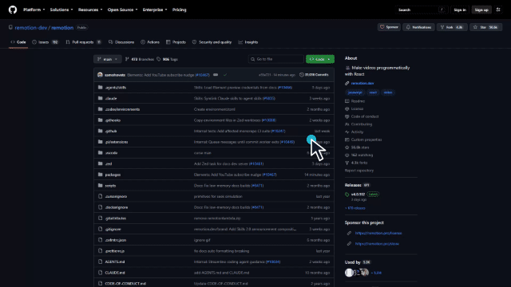
暂未生成真实 GIF请先运行 npm run capture:github
cursor-swaypointer
光标轻微摆动
光标停在按钮上时加入轻微自然摆动
真实 GitHub 指令：在真实 GitHub 页面录制层上叠加演示光标，停在目标链接附近做轻微自然摆动。
素材要求：captured-page-overlay
默认参数
{
"amplitude": 3,
"frequencyHz": 1.1,
"rotationDeg": 2
}
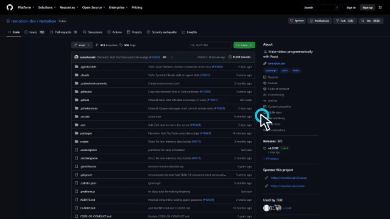
暂未生成真实 GIF请先运行 npm run capture:github
click-bouncepointer
点击回弹
点击按钮时做一个轻微回弹，并显示点击波纹
真实 GitHub 指令：在真实 GitHub 页面录制层上的目标链接或按钮位置叠加点击回弹和点击波纹。
素材要求：captured-page-overlay
默认参数
{
"scalePeak": 0.92,
"settleScale": 1,
"ripple": true,
"durationMs": 260
}
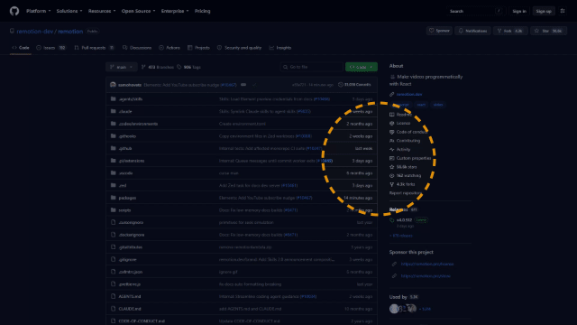
暂未生成真实 GIF请先运行 npm run capture:github
spotlightfocus
聚光灯聚焦
聚光灯聚焦在登录按钮上，其余区域略微变暗
真实 GitHub 指令：在真实 GitHub 页面录制层上对 README 目标区域添加聚光遮罩，其余页面轻微变暗。
素材要求：captured-page-overlay
默认参数
{
"radius": 92,
"dimOpacity": 0.58,
"feather": 24,
"followCursor": false
}
暂未生成真实 GIF请先运行 npm run capture:github
annotation-calloutannotation
标注气泡
在搜索框右侧出现一个带箭头的说明气泡：输入关键词
真实 GitHub 指令：在真实 GitHub 页面录制层的目标标题或代码区域旁添加带箭头的说明气泡。
素材要求：captured-page-overlay
默认参数
{
"label": "输入关键词",
"accent": "#f59e0b",
"enter": "fade-slide-up",
"durationMs": 360
}
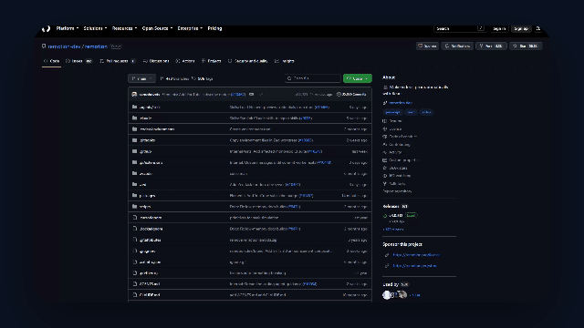
暂未生成真实 GIF请先运行 npm run capture:github
frame-rounded-shadowframe
圆角阴影画框
给网页画面加 24px 圆角和柔和阴影
真实 GitHub 指令：将真实 GitHub 页面录制放入带圆角和柔和阴影的画框中，不改变页面内容。
素材要求：captured-page
默认参数
{
"radius": 24,
"shadowBlur": 30,
"shadowOpacity": 0.28,
"padding": 20
}
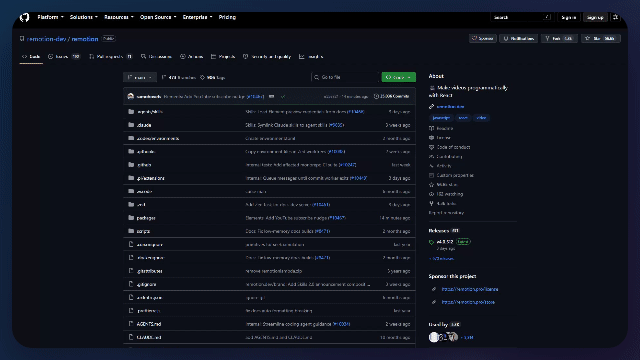
暂未生成真实 GIF请先运行 npm run capture:github
background-gradient-blurbackground
渐变模糊背景
网页后面铺一层蓝紫色渐变模糊背景
真实 GitHub 指令：以真实 GitHub 页面录制作为前景，在其后添加低对比度渐变模糊氛围层。
素材要求：captured-page
默认参数
{
"colors": [
"#38bdf8",
"#8b5cf6"
],
"blur": 70,
"opacity": 0.72
}

暂未生成真实 GIF需要额外真实输入或可定位 DOM 区域
webcam-bubbleoverlay
摄像头气泡
右下角叠加一个带白色描边的圆形人像气泡
真实 GitHub 指令：在真实 GitHub 页面录制右下角叠加真实摄像头视频气泡；缺少 webcam-video 时不生成。
素材要求：requires-extra-input
默认参数
{
"position": "bottom-right",
"size": 112,
"borderWidth": 5,
"shadow": true
}
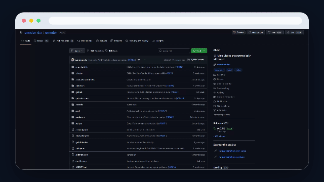
暂未生成真实 GIF请先运行 npm run capture:github
browser-device-frameframe
浏览器设备外框
把网页放进一个带地址栏的浏览器窗口外框
真实 GitHub 指令：将真实 GitHub 页面录制放入带地址栏的浏览器设备外框，页面内容保持真实。
素材要求：captured-page
默认参数
{
"frame": "browser",
"chromeHeight": 34,
"radius": 16,
"showAddressBar": true
}

暂未生成真实 GIF需要额外真实输入或可定位 DOM 区域
dynamic-block-revealreveal
动态模块出现
页面里的三个模块依次淡入并向上移动 16px
真实 GitHub 指令：对真实 GitHub 页面中可定位的多个 DOM 区域做依次出现；只有单条录制视频时不伪造独立模块。
素材要求：requires-extra-input
默认参数
{
"staggerMs": 90,
"distance": 16,
"opacityFrom": 0,
"opacityTo": 1,
"easing": "easeOut"
}
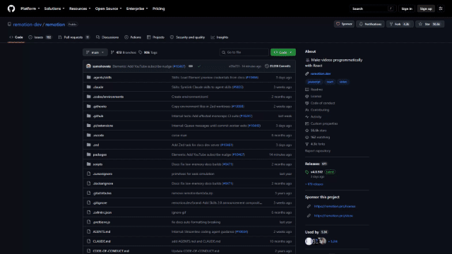
暂未生成真实 GIF请先运行 npm run capture:github
transition-hard-cuttransition
硬切转场
镜头1结束后直接硬切到镜头2
真实 GitHub 指令：使用真实 GitHub 录制中的两个不同时间段，做直接硬切，不重绘页面。
素材要求：captured-page
默认参数
{
"durationFrames": 1,
"color": "#0f172a"
}
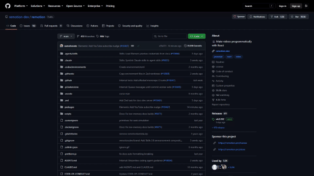
暂未生成真实 GIF请先运行 npm run capture:github
transition-fadetransition
淡入淡出转场
镜头之间用 300ms 的淡出淡入连接
真实 GitHub 指令：使用真实 GitHub 录制中的两个不同时间段，做淡入淡出连接，不重绘页面。
素材要求：captured-page
默认参数
{
"durationMs": 300,
"color": "#0f172a",
"easing": "easeInOut"
}